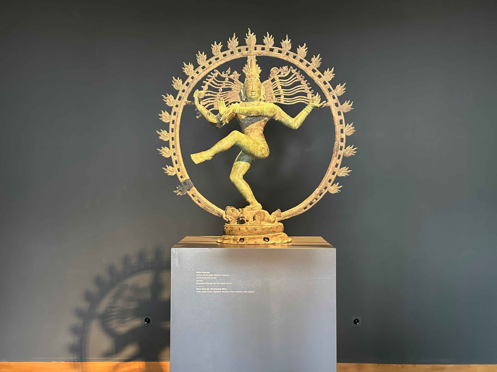

David Plüss zum 60. Geburtstag
Mitten im behaglichen Quartier Enge in der Stadt Zürich, in unmittelbarer Nähe zu einer jüdischen Schule, zur katholischen Kirche Dreikönigen und zur reformierten Kirche Enge, befindet sich das Museum Rietberg. Zum Museum gehören neben der Villa Wesendonck – in der Richard Wagner (1813–1883), den die Familie Wesendonck verehrte, 16 Monate lang lebte und wo er Tristan und Isolde komponierte – auch die Villa Rieter und die Villa Schönberg. Die Villa Wesendonck inmitten des an alten Bäumen reichen Rietbergparks ist seit 1945 im Besitz der Stadt Zürich. 2007 wurde das Gebäudeensemble aus drei repräsentativen Villen aus dem 19. Jahrhundert um einen Erweiterungsbau, den ‹Smaragd›, ergänzt, dessen moderne Glasfassade einen neuen ästhetischen Akzent setzt und der nicht minder ansehnlich ist. Die sorgsam restaurierten Villen und die grosszügige Parkanlage dokumentieren einen saturierten Wohlstand, in dem sich die Besucher:innen des Museumscafés und des Parks fast das ganze Jahr über sonnen.
Villa Wesendonck, von 1853–1857 für Otto und Mathilde Wesendonck erbaut. (Foto: Adriana Basso Schaub)
Eine Kulturinstitution der Stadt Zürich
Von aussen verweisen nur Plakate darauf, dass die Villa Wesendonck und
der Neubau das international bekannte Museum Rietberg beherbergen, das
materielle Zeugnisse fernöstlicher Kunst, Kultur und Religion aufbewahrt
und ausstellt. Das Museum wurde 1952 als Kunstmuseum gegründet. Es
sammelt und zeigt nicht-westliche Kunst. Die Sammlung umfasst eine
Vielzahl von Objekten, zu denen ebenso Kunstwerke wie Ritualobjekte
gehören. Gesammelt wurden Objekte von hoher künstlerischer Qualität aus
allen Kulturen und Weltreligionen und so versteht sich das Museum
Rietberg als Museum für die Künste und die Kunstgeschichte der Welt.
Der Sammlungsbestand von rund 76‘600 Artefakten, davon 50‘000
Fotografien, macht das Museum und seine Sammlung auch zu einem Archiv
und Dokumentationszentrum aussereuropäischer Kunst, dessen weit
verzweigte ‹Sammlung an Sammlungen› sich aus Schenkungen, Legaten und
Ankäufen zusammensetzt. Von besonderer Bedeutung ist die Sammlung des
Gründungsdonators Eduard von der Heydt (1882–1964). Der
Sammlungsgeschichte widmete sich im Jahr 2022 eine Ausstellung mit dem
Titel Wege der Kunst. Wie die Objekte ins Museum kommen. Das
programmatisch weit gefasste Museumsprofil zeigt sich in den
Sonderausstellungen, die objektbezogen zum Entdecken und Staunen
einladen, was auch die zurückliegenden Ausstellungstitel erahnen lassen:
Young Krishna. Die Abenteuer eines indischen Gottes (2023),
Im Namen des Bildes. Das Bild zwischen Kultur und Verbot im Islam und
Christentum
(2022),
Jain sein. Kunst und Leben einer indischen Religion (2022) und
ZeitRäume. Zeitgenössische Miniaturmalerei aus Pakistan (2019).
Die Wechselausstellungen werden im Erweiterungsbau gezeigt und zeichnen
sich durch ihre aufwendige Gestaltung und museumpädagogische
Aufbereitung aus.
Credo: Ars una
Dreh- und Angelpunkt der vielfältigen Ausstellungen sind Objekte und Fotografien, die das kulturelle Gedächtnis einer Kultur, Epoche oder Religion im Kontext einer Ausstellung exemplarisch zum Ausdruck bringen. Präsentiert werden die fernen Kulturen, Kontinente und Epochen anhand von Objekten, die mit hoher Fachkompetenz dokumentiert werden. Kultur, Religion und Kunst bilden die grosse Klammer, die das Ausstellungsprogramm zusammenhält, wobei die Ausstellungen Verbindungslinien zwischen Tradition, Vergangenheit und Gegenwart sowie zwischen Asien, Afrika, Amerika und Ozeanien aufzeigen. Religion ist kein ständiger Bezugspunkt der Ausstellungspraxis und zugleich sind fernöstliche Religionen anhand der Ritualobjekte in der ständigen Ausstellung in der Villa Wesendonck und in zahlreichen Dauerausstellungen im Museum Rietberg überaus präsent. Religion vermittelt sich in diesem Museumskontext nicht durch die Rekonstruktion religiöser Praktiken, sondern anhand hochwertiger Kunstwerke und Kultgegenstände, die in den Ausstellungen und im Schaudepot zu sehen sind.

Schaudepot. (Foto: Adriana Basso Schaub)
Dass die Objekte in den Ausstellungsräumen nicht als
Ethnographica im Rahmen einer völkerkundlichen Sammlung, sondern
als Kunstwerke ausgestellt werden, geht auf die programmatisch
vorausgesetzte Einzigartigkeit und Universalität der Kunst zurück, die
Kulturen und Völker verbindet.
Die Ausstellungsräume in der sorgsam instandgehaltenen Villa Wesendonck
stehen in ihrer Pracht den Objekten in nichts nach und provozieren
zugleich ästhetische Kontrasterfahrungen. Die Präsentation von
Einzelobjekten aus von Zürich aus gesehenen fernen Zeiten und
Weltgegenden (Indien, Alaska, Peru, etc.) bleibt zwangsläufig auf
einzelne Artefakte beschränkt.
Ausstellungsräume in der Villa Wesendonk. (Foto: Adriana Basso Schaub)
Shiva Nataraja, ein Kultbild der Chola um 1050, Südindien. (Foto: Adriana Basso Schaub)
Komparative Theologie oder die verbindende Schönheit der Religionen
Greifbar werden implizite Religions- und Theologieverständnisse in Ausstellungen, die grosse Bögen schlagen und kultur- und religionsvergleichend konzipiert sind. So wurde etwa in der Ausstellung Im Namen des Bildes 2022 der Umgang mit Bildern beziehungsweise die Geschichte des Bilderverbots im Christentum und im Islam vergleichend untersucht. Die Ausstellung zeigte Objekte aus einem über 1000 Jahre umfassenden Raum zwischen Europa und Asien, wobei geläufige Zuschreibungen unterlaufen und islamische Miniaturenmalerei ebenso wie Andachtsbilder oder Illustrationen aus französischen Stundenbüchern des 15. Jahrhunderts gezeigt wurden. Die Darstellung und Nichtdarstellung Gottes führte in dieser Ausstellung zu einer Auseinandersetzung mit kulturell und religiös geprägten Bildverständnissen sowie künstlerischen Strategien, diese Bildkonzepte auszuloten. Der vergleichende Zugriff auf die Rolle der figürlichen Darstellung in der islamischen und christlichen Tradition bringt eine Ausstellung hervor, die ganz unterschiedliche Objekte zeigt, und die durch überraschende Vergleiche als ähnlich und gleichwertig erkennbar werden. Aus den ursprünglichen Bezügen herausgelöst werden Objekte gezeigt, deren Schönheit und Wertigkeit auch ohne Vertiefung in das Begleitmaterial den Betrachter:innen zugänglich ist. In einer Museumsbroschüre beschrieb der frühere Direktor Eberhard Fischer (*1942) 1982 die besondere, geradezu religionsaffine Erlebnisqualität des Museums Rietberg treffend folgendermassen: das «Erhabene, Würdevolle, Strenge, ja, das Erleuchtete wird spürbar in diesen Werken vergangener Epochen in Ruhe und Serenität». In dieser Aussage schwingt die hohe Wertschätzung für die gesammelten und ausgestellten Artefakte mit, deren religiöse Entstehungs- und Nutzungsgeschichte explizit gemacht wird. Religionen werden hinsichtlich materialer und künstlerischer Hinterlassenschaften in spezifischen kulturellen Kontexten fassbar. Das Museum Rietberg setzt als Kunstmuseum für aussereuropäische Kunst damit auch einen Kontrapunkt zum vielfach konflikt- und problemhermeneutisch agierenden gesamtgesellschaftlichen Diskurs über Religion und zeigt in einem gediegenen Ambiente die künstlerische Meisterschaft nicht-westlicher Religionen und Kulturen.
Sonja Keller ist Professorin für Praktische Theologie an der Augustana-Hochschule Neuendettelsau.
Weitere Artikel von {{ author.author }} finden Sie hier:
Zur Vertiefung:
- Langer, Axel (Hg.): Im Namen des Bildes. Die figürliche Darstellung in islamischen und christlichen Kulturen, Berlin 2022.
- Tisa Francini, Esther / Csernay, Sarah (Hgg.): Wege der Kunst. Wie die Objekte ins Museum kommen, Zürich 2022.
- Fischer, Eberhard: «Das Museum Rietberg Zürich», in: Museum Rietberg (Hg.), Museum Rietberg Zürich, Braunschweig 1982, 11–27.